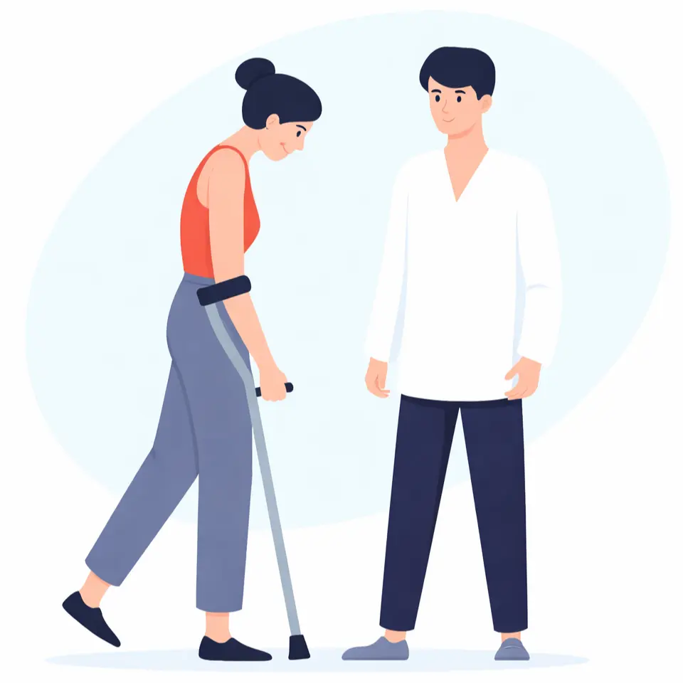

Leistungen
Unsere Physiotherapie-Leistungen
direkt bei Ihnen zu Hause

Rehabilitation nach Operationen & Verletzungen
Strukturierte Therapie für eine sichere Rückkehr in Alltag und Aktivität.

Therapie bei Schmerzen
Individuelle Behandlung zur nachhaltigen Linderung von Schmerzen und Verbesserung Ihrer Beweglichkeit.

Eingeschränkte Mobilität
Gezielte Förderung Ihrer Beweglichkeit für mehr Sicherheit und Unabhängigkeit im Alltag.

Neurologischen Beschwerden
Gezielte Therapie auf neurophysiologischer Basis (Bobath, PNF, Vojta) zur Verbesserung krankhafter Bewegungsmuster – bei Erkrankungen des Gehirns und Rückenmarks direkt bei Ihnen zu Hause.

Schwindel & Gleichgewichtsstörungen
Gezielte Übungen zur Verbesserung von Gleichgewicht und Sicherheit.

Physiotherapie im Alter
Individuelle Therapie zur Erhaltung von Beweglichkeit und Lebensqualität im Alltag.
Unsere physiotherapeutischen Methoden
Je nach Beschwerdebild kommen verschiedene Methoden zum Einsatz:
- Krankengymnastik (KG)
- Manuelle Therapie (MT)
- Lymphdrainage (MLD)
- Atemtherapie
- Personal Training
- Massagetherapie